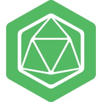
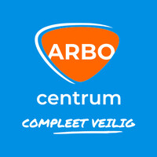

|
Rashid Obaid I am a BESS R&D Engineer at Ampowr in Utrecht, the Netherlands, where I work on innovative Battery Energy Storage System Solutions. At OQmented I've worked on Augmented Reality Glasses using MEMS mirrors technology. I did my Masters at University of Kiel, where I was advised by Prof. Dr.-Ing. Andreas Bahr during my thesis. |
{kind=link}
Research / Work Experiences / ProjectsI'm interested in embedded systems, batteries, BMS (Battery Management System), and IOT (Internet of Things). |
|

|
Battery Energy Storage Systems R&D and Field Services Engineer at Ampowr B.V. Utrecht, Utrecht, The Netherlands Duration: Nov 2023 - Present Embedded Systems Development & Integration: -generator control through relay boards, from R&D concept to live deployment across multiple sites, controlling gensets successfully through EMS (easy integration with all EMS, implementing customized control strategies). -embedded solutions (design, testing, and commissioning), customized embedded product development based on customer requests, mainly using modbus tcp, modbus rs485, serial rtu communication protocols. Control System Designs: -control system designs through PLCs and microcontrollers. -integration of meters (acrel, janitza) into a customized PLC solution. Battery Energy Storage Systems (BESS) Expertise: -complete testing of BESS in laboratory workshop environment (2.5kW/5kWh systems all the way upto 250kW/500kWh systems). -extensive troubleshooting of BESS on field services support (up to 1MW/2MWh systems) to get the faulty BESS systems back up and running. -conducting firmware updates of the BESS and ensuring correct functionality after the updates. Technical Support: -technical support for customers, help with questions related to customized BESS solutions. -technical support for EMS developments and improvement. |
|
|
Internship and Master Thesis at OQmented Kiel, Schleswig-Holstein, Germany Duration: Jun 2022 - Apr 2023 (11 mos) Paper of interest from Dr. Ulrich Hofmann, OQmented CEO and founding member: High-Q MEMS Resonators for Laser Beam Scanning Displays Ulrich Hofmann, Joachim Janes, Hans-Joachim Quenzer, Fraunhofer Institute for Silicon Technology ISIT, Fraunhofer Strasse 1, Itzehoe D-25524, Germany Micromachines 2012, 3(2), 509-528; https://doi.org/10.3390/mi3020509 |
|
|
Research Assitant at Kiel University Kiel, Schleswig-Holstein, Germany Duration: Nov 2021 - May 2022 (7 mos) Chair of Integrated Systems and Photonics |
|
|
Research Assitant - Internet of Things at National University of Sciences and Technology Duration: Aug 2018 - Sep 2020 (2 yrs) |
Licenses & Certifcations |
|  |
Occupational Health & Saftey (OHS), VCA certification. Credentials/Certifcation ID: 1733152.00525826 |
|
Design and source code from Jon Barron's website. |